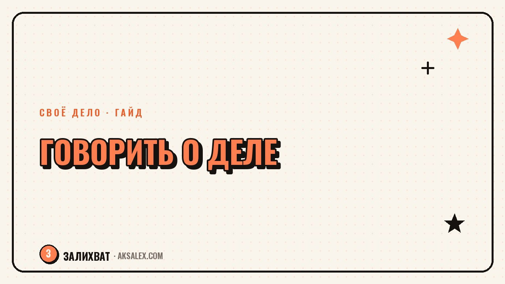

Как говорить о себе и своём деле, чтобы слышали

«Чем ты занимаешься?» - вопрос, после которого многие теряются и выдают сухое перечисление услуг или извиняющееся «ну, я типа пытаюсь...». Рассказ о деле не требует актёрской подачи - ему нужна структура, которая сразу показывает, зачем это слушателю. Разбираем, как её выстроить.
Почему рассказ о деле получается скучным или неловким
Частая ошибка - начинать с процесса, а не с результата для человека. «Я делаю сайты на конструкторе» звучит как список обязанностей, а не как причина заинтересоваться. Слушатель слышит процесс и не понимает, зачем это ему.
Вторая ошибка - извиняющийся тон у тех, кто начал недавно: «ну я вообще-то только начала, не знаю, получится ли». Такая подача снижает доверие ещё до того, как человек услышал суть дела.
Структура рассказа, которая работает
Шаг 1. Кому и с чем помогаешь
Вместо «я делаю...» начни с «я помогаю [кому] с [чем]». Например: «я помогаю маленьким магазинам разбираться с инстаграмом» звучит конкретнее, чем «веду соцсети».
Шаг 2. Один пример вместо списка услуг
Список услуг забывается сразу. Короткий пример из практики - запоминается. «На прошлой неделе помогла человеку собрать первый заказ через переписку в директе» работает лучше, чем перечисление из пяти пунктов.
Шаг 3. Открытый конец, а не точка
Закончи фразой, которая оставляет пространство для вопроса: «если интересно, могу рассказать подробнее» или «сейчас как раз беру несколько новых проектов». Это снижает давление и даёт собеседнику выбор, продолжать разговор или нет.
- Кому помогаешь - конкретная группа, а не «всем»
- С чем конкретно помогаешь - понятная боль, а не абстракция
- Один живой пример из практики
- Открытая фраза в конце без нажима
Примеры до и после
Разница между сухим и живым рассказом заметна сразу, даже на коротких фразах.
| Было | Стало |
|---|---|
| Я веду блог про психологию | Помогаю людям разбираться в своих эмоциях через простые разборы в блоге |
| Я делаю маникюр | Ко мне приходят, когда хочется, чтобы руки выглядели ухоженно без долгого ожидания |
| Я изучаю нейросети | Помогаю людям разобраться, какая нейросеть решит их конкретную задачу |
| Я фотограф, снимаю разное | Снимаю семейные истории так, чтобы фото хотелось повесить на стену, а не спрятать в телефон |
Рассказ о деле работает не тогда, когда звучит впечатляюще, а тогда, когда слушатель сразу понимает, кому это нужно и зачем.
Где использовать эту структуру
Та же структура работает и в устном разговоре на мероприятии, и в описании профиля в соцсети, и в первом сообщении потенциальному клиенту. Разница только в длине - живой разговор можно сократить до одной фразы, а текст в профиле развернуть на два-три предложения.
Как нейросети помогают отрепетировать рассказ
Нейросеть удобно использовать как собеседника для тренировки: попросить сыграть роль человека, который впервые слышит о твоём деле, и задать уточняющие вопросы. Это помогает найти слабые места в формулировке до того, как ты произнесёшь её вживую.
- Текстовая нейросеть - несколько вариантов короткого рассказа по структуре
- Та же нейросеть в роли «скептического слушателя» - для проверки на понятность
- Диктофон плюс расшифровка - услышать, как рассказ звучит вслух, а не только на бумаге
Частые вопросы
Как рассказать о деле, если оно только начинается?
Используй ту же структуру «кому помогаю и с чем», даже если клиентов пока мало. Можно честно сказать «начинаю с этого направления», но без извиняющегося тона - факт раннего старта не делает дело менее настоящим.
Что делать, если дело сложно объяснить коротко?
Найди одну конкретную ситуацию из практики или воображаемого клиента и расскажи через неё, а не через общее описание. Пример почти всегда понятнее абстрактного определения.
Как не звучать навязчиво, рассказывая о своём деле?
Заканчивай рассказ открытой фразой без прямого призыва, вроде «если будет интересно - расскажу подробнее», и дальше следи за реакцией собеседника, не настаивая на продолжении.
Нужно ли менять рассказ под разные аудитории?
Да, стоит слегка менять формулировку боли под того, с кем говоришь. Суть дела остаётся той же, но акцент на «кому помогаешь» лучше подстраивать под конкретного слушателя.
Как понять, что рассказ о деле работает?
Главный признак - собеседник задаёт уточняющий вопрос или сам просит рассказать подробнее. Если в ответ обычно звучит нейтральное «понятно» и тема сразу меняется, формулировку стоит пересобрать.
Раз тема оказалась полезной, вот что почитать следующим. Почему интерес к новому делу гаснет через месяц и что делать, чтобы не бросить на этом этапе.
Читать статью →а не вручную